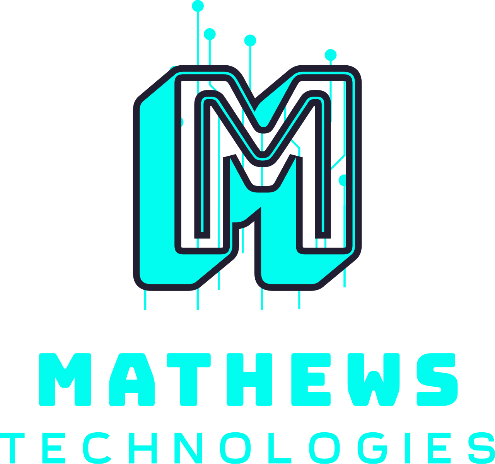
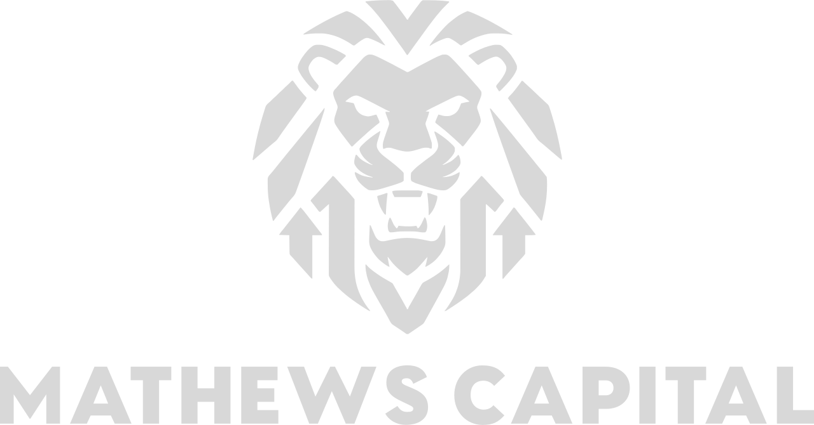

+510K
daily original Threads posts
I build high-scale consumer products and real-time systems for iOS.

Eight years across founding teams, Meta, Audible, and connected-device startups. I specialize in offline-first architecture, mobile performance, and products that deliver measurable growth.
Selected product impact at Meta
Growth, engagement, and revenue improvements delivered across Instagram and Threads.
+510K
daily original Threads posts
+320K
users onboarded per day
+2.12%
daily active users
+0.25%
Instagram revenue impact
Turning ambitious product ideas into a dependable, fast iOS experience from the first architecture decision onward.
Founding Engineer at Idle
Jan 2026-Present
Leading product and systems work for an app that turns natural-language prompts into interactive widgets while keeping collaboration responsive across unreliable networks.
Built the AI widget creation workflow alongside groups, channels, direct messages, and unread-state experiences.
Designed optimistic offline sync and recovery, then improved startup and timeline performance with cache-first loading, fetch-around pagination, and deferred hydration.
Independent work spanning mobile clients, secure backend infrastructure, quantitative research, and real-time execution.

Mobile agent platform
A secure iOS and backend system for running AI agents against GitHub repositories with visible progress and human approval.
SwiftUI / Fastify / AWS / WebSockets

Quantitative systems
A research-to-execution platform for testing market hypotheses rigorously and deploying validated strategies.
Python / C++17 / ClickHouse / ML
Each role expanded the products, systems, and engineering decisions I could own.
Meta / Instagram and Threads
Led product and platform work connecting Instagram and Threads at global scale.
Audible / Amazon
Built iOS infrastructure and product systems for a high-traffic listening experience.
Globalstar
Shipped mobile workflows where software reliability met Bluetooth and satellite hardware.
I'm a senior iOS engineer with eight years of experience building consumer products from early-stage startups to global platforms.
I do my best work where product judgment and systems depth meet: offline-first architecture, real-time collaboration, mobile performance, and the details that make an app feel dependable.
I also build quantitative research and execution systems. Outside of engineering, I'm a New Orleans native with strong opinions about negronis, Lil Wayne mixtapes, and Louisiana sports.
I'm interested in ambitious mobile products, high-scale systems, and difficult engineering problems.
Send an email